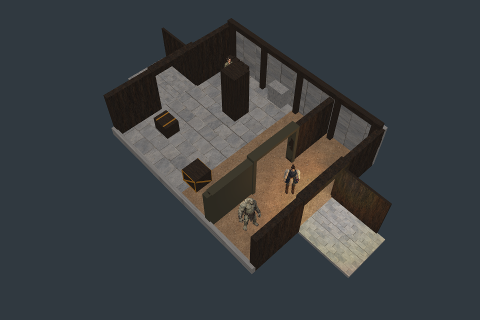
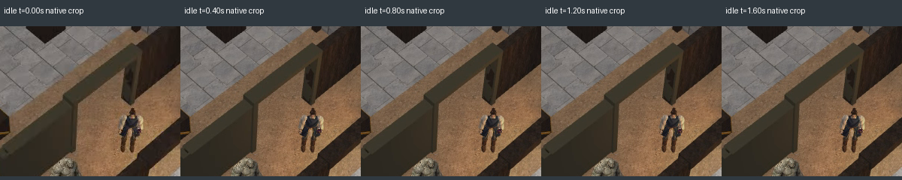

Godot is the shipping target; Pixi is the test harness. The current painted body, hair and gear now use the chamber’s light and depth. 864 source-render comparisons and the sampled door-depth checks pass.
Runtime walk contact is still FAIL: one advanced-outfit recording drifts 3.26 cm at the planted foot, above the 2 cm limit. Whole-frame pose sampling and continuous root motion use different times. The source clip’s discrete contact pass does not resolve this runtime failure. Fractional pose sampling is the next bounded test.

Fresh 3× is rendered again from geometry; it is not an enlarged screenshot. Scroll to inspect it at native pixels. Both factions retain their declared exterior aprons and working sliding door. F01’s dark flat pocket, overall environment detail, other actors and ground shadows remain unfinished.

All 216 stored frames render without GL errors; nine videos complete with accepted simulation movement commands. Walk translation follows the manifest, but player-driven start/stop/steering is not implemented here. The walk becomes partly occluded by the partition, so foot inspection is limited in later video samples. The separate contact calculation above detects the timing mismatch.
Source comparison: idle, walk and cast across eight headings, three outfit modes, three lights, two world positions and native/fresh resolution. Worst MAE 0.01998, fraction above 8 is 0.001132; unchanged limits are 1 and 0.02. Shifted gear and wrong pose are detected. Missing normal corrections are below the error threshold in this chamber-light setup; that insensitive control remains recorded.
6,324 panel witnesses and 1,728 open-aperture witnesses pass with the current pilot. An always-front pilot breaks nine guarded door witnesses in each faction/resolution. This samples depth agreement; it does not exhaustively prove all surface intersections. The body normal stream remains 16.736 MB; production memory is unqualified.
The original full-chamber capture stopped at its 85 MB guard after 97 of 108 images. That failed receipt is preserved. Captures were packed losslessly with exact RGBA checks, and only the missing 11 cases were completed. All 108 unique cases are now present.
Report · Receipt · Source comparisons · Preserved capture failure · Runtime contact failure · Live fixture (local server)